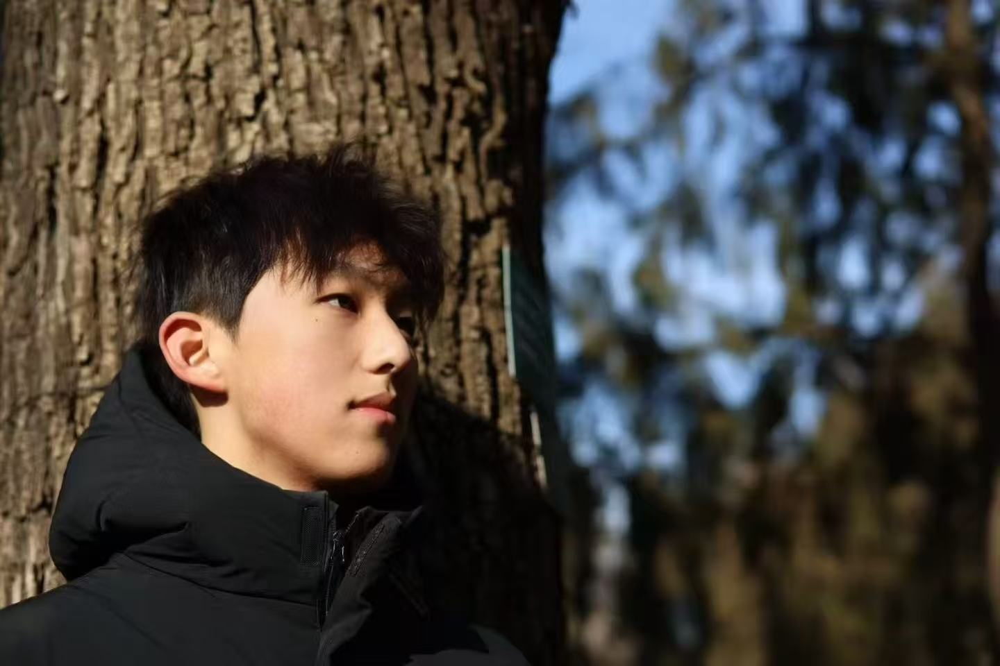
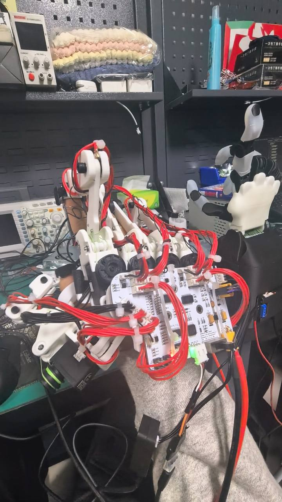
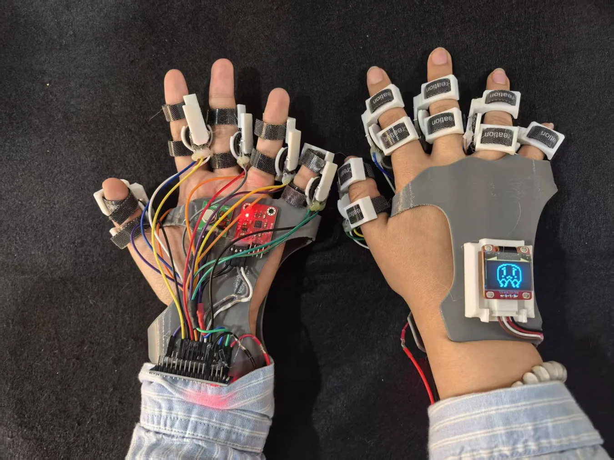
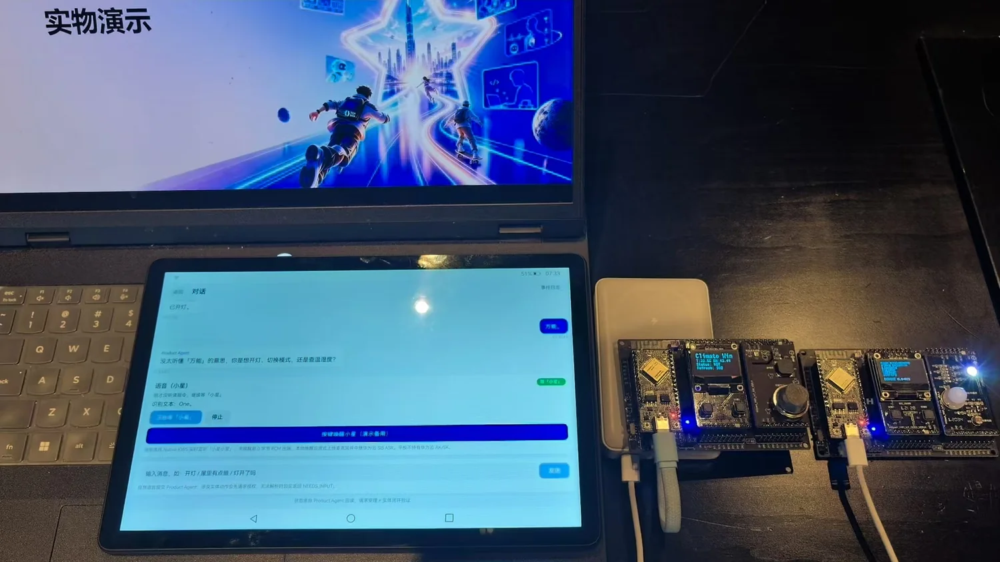
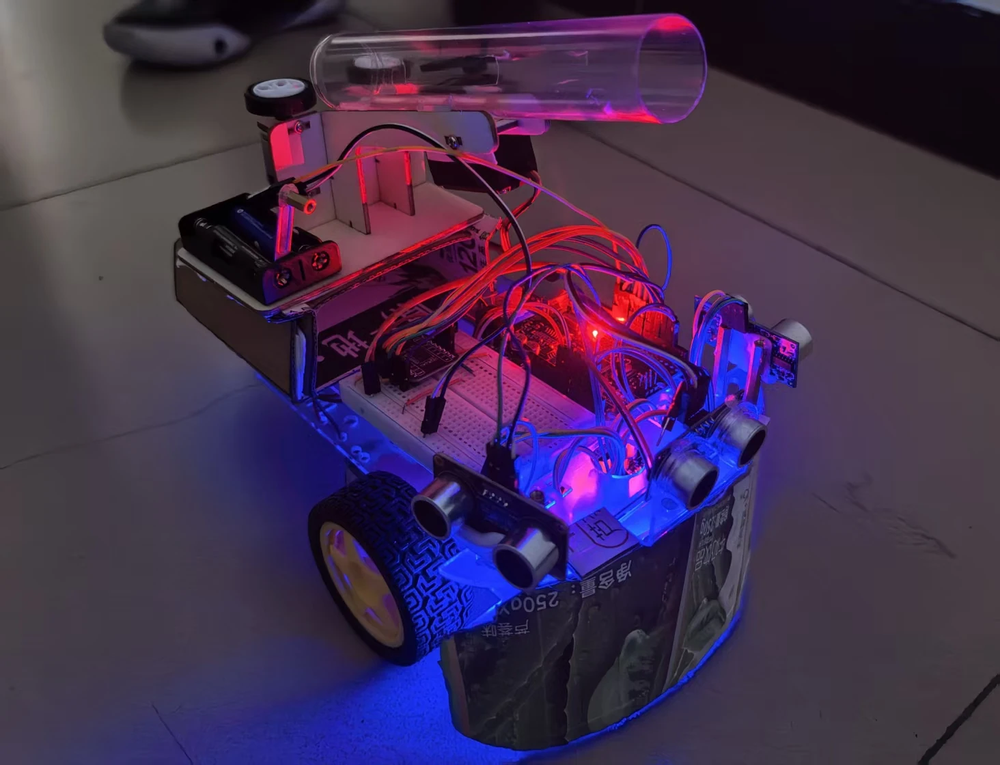
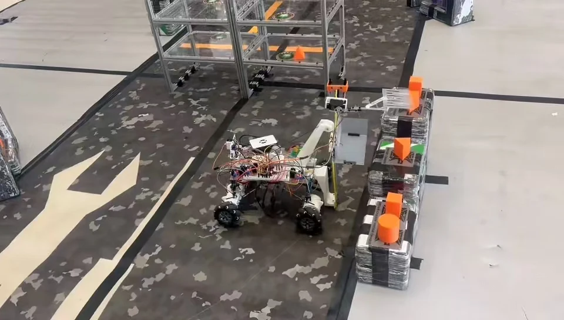

异构运动重定向与灵巧操作
不同手部构型和工作空间下，如何保留指尖空间关系与动作语义，并通过标定和约束求解减少映射偏差？
运动学建模 · 指尖约束 · 姿态标定北京理工大学 · 电子信息工程
PERSONAL PORTFOLIO / 2026
机器人学习与灵巧操作 · 本科生学术主页
我关注人手与机器人手之间的运动映射、可穿戴多模态感知及真实系统中的决策与控制，希望在已有软硬件开发经验的基础上，进一步开展以问题定义、建模和实验验证为核心的研究。

CHENXU WANG 01 / PROFILE大一学年 · 纯成绩排名前 0.87%
大一学年 · 综合测评前 0.43%
大学英语四级 · CET-4
关于我
我是北京理工大学电子信息工程专业本科生，研究兴趣集中在具身智能、机器人学习与灵巧操作。已有项目涉及传感采集、嵌入式控制、可穿戴交互、AIoT 智能体及灵巧手遥操作。
已有实践让我逐渐形成对机器人算法的兴趣：从系统调试中识别运动学不匹配、传感漂移和通信不稳定等具体问题，再通过建模、标定与对照实验分析原因。目前我正在将灵巧手遥操作整理为包含数据采集、空间映射、受限逆运动学及误差评估的技术探索。
Research interests
以下是结合已有项目形成的研究兴趣与拟探索问题。
不同手部构型和工作空间下，如何保留指尖空间关系与动作语义，并通过标定和约束求解减少映射偏差？
运动学建模 · 指尖约束 · 姿态标定如何把可穿戴传感器采集的动作转换为机器人可执行的表征？希望进一步学习示教数据质量分析、模仿学习与策略评估。
动作表征 · 示教数据 · 模仿学习如何结合动作、声音与语义信息，并在信息冲突或低置信度时提供可解释的反馈？关注从传感采集到反馈执行的可靠性。
可穿戴感知 · 信息融合 · 交互反馈教育与学习
信息与电子学院 · 国家奖学金获得者
大一学年纯成绩排名 2/230（前 0.87%）
大一学年综合测评排名 1/230（前 0.43%）
大学英语四级 613 分
2025 年 12 月
Python、C/C++、STM32、Arduino、Git、Linux
传感采集、BLE、嵌入式调试与运动学分析
项目经历
机器人 / 可穿戴设备 / 智能空间




校园机器人竞赛
第十一届屠龙勇士智能车大赛 · 校二等奖带队完成智能车硬件装配、固件调试与赛道测试，将传感器、电机与控制程序整合为可运行的竞赛原型。
嵌入式 C / 电机控制 / 传感器集成
承担硬件集成、嵌入式调试和整车测试，围绕实际赛道迭代车辆运行表现。

移动机器人
追梦杯机器人竞赛 · 校三等奖参与微控制器机器人与智能车原型开发，完成电机、传感器、电子线路和控制代码的联调。
微控制器 / 传感器 / 控制程序 / 实物调试
在实物测试中排查软硬件问题，积累嵌入式控制、模块联调与系统测试经验。
竞赛与荣誉
第十四届 NCDA 全国总决赛 · 本科生组 ·《多模态情感转译手语外骨骼》· 第二作者
星居 AI · 端云协同智慧空间
团队队长 · 硬件集成与固件调试
机器人与智能车实践
星居 AI 正在准备省赛金奖争夺赛，目标为省级金奖。